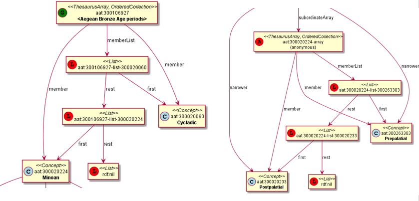
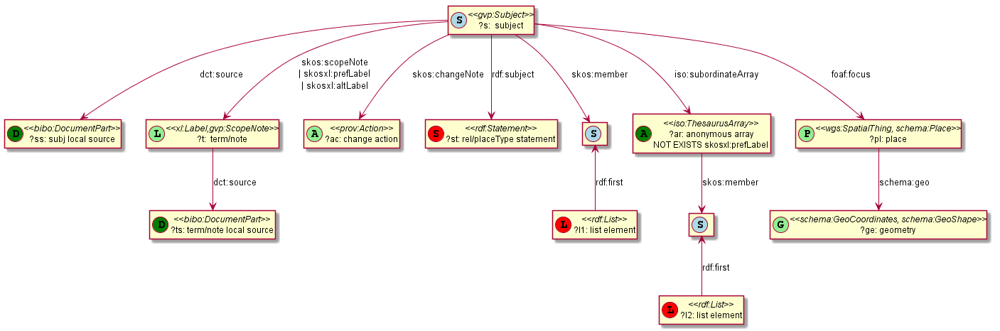

GVP LOD: Ontologies and Semantic Representation
Vladimir Alexiev, Data and Ontology Group, Ontotext Corp
CIDOC Congress, Dresden, Germany
2014-09-05: International Terminology Working Group: full version (HTML)
2014-09-09: Getty special session: short version (PDF)
Press O for overview, H for help.
Proudly made in plain text with reveal.js, org-reveal, org-mode and emacs.
Ontotext Scope of Work
- Ontology development: http://vocab.getty.edu/ontology
- Contribution to ISO 25964 ontology (latest thesauri standard)
- Complete mapping specification
- Help with R2RML conversion scripts, contrib to RDB2RDF (Perl), rrx:languageColumn extension
- GraphDB (OWLIM) repository. Enterprise Edition (clustered)
- Sem app dev (customized Forest UI), tech consulting
- SPARQL 1.1 endpoint: http://vocab.getty.edu/sparql
- Documentation (100 pages): http://vocab.getty.edu/doc
- Lots of sample queries, incl charts, geographic, etc
- Per-entity export files, explicit/total data dumps
- Help desk / support
- Presentations, scientific papers
Semantic Resolution & Content Negotiation
All GVP, AAT and TGN URLs resolve, returning human or machine readable content through content negotiation (303 redirect). Eg about the ontology:
| http://vocab.getty.edu/ontology | semantic URI, content-negotiated |
| http://vocab.getty.edu/ontology.html | page (application/xhtml+xml) |
| http://vocab.getty.edu/ontology.rdf | application/rdf+xml |
| http://vocab.getty.edu/ontology.ttl | text/turtle |
Eg about an AAT subject
| http://vocab.getty.edu/aat/300011154 | semantic URI, con-neg |
| http://vocab.getty.edu/aat/300011154.html | page (application/xhtml+xml) |
| http://vocab.getty.edu/aat/300011154.rdf | application/rdf+xml |
| http://vocab.getty.edu/aat/300011154.ttl | text/turtle |
| http://vocab.getty.edu/aat/300011154.nt | NTriples |
| http://vocab.getty.edu/aat/300011154.json | JSON (to change to .rj) |
GVP Vocabulary Data
Scope includes:
- Subjects: Concepts but also non-concepts
- Obsolete subjects (and dct:isReplacedBy)
- Terms: plain (SKOS) & rich (SKOS-XL). Term characteristics
- Languages (some custom lang tags)
- Hierarchical rels: custom & standard, distinguish BTG,BTP,BTI
- Associative rels (170 subprop of skos:related)
- Historic info on rels (rdf:Statement) and terms
- Alignment (exactMatch to LCSH)
- Sources (bibo:Document, bibo:DocumentPart with locator)
- Contributors (foaf:Agent)
- Revision history (prov:Activity)
- Thesaurus-specific (TGN place types, coordinates)
One of the richest thesauri I've seen
External Ontologies
| Prefix | Ontology | Used for |
| bibo: | Bibliography Ontology | Sources |
| dc: | Dublin Core Elements | common |
| dct: | Dublin Core Terms | common |
| foaf: | Friend of a Friend ontology | Contributors |
| iso: | ISO 25946 (latest on thesauri) | iso:ThesaurusArray, BTG/BTP/BTI |
| owl: | Web Ontology Language | Basic RDF representation |
| prov: | Provenance Ontology | Revision history |
| rdf: | Resource Description Framework | Basic RDF representation |
| rdfs: | RDF Schema | Basic RDF representation |
| schema: | Schema.org | common, geo (TGN) |
| skos: | Simple Knowledge Org System | Basic vocabulary representation |
| skosxl: | SKOS Extension for Labels | Rich labels |
| wgs: | W3C World Geodetic Survey geo | Geo (TGN) |
| xsd: | XML Schema Datatypes | Basic RDF representation |
GVP Semantic Representation

GVP Semantic Representation (2)

Hierarchical Relations
Use iso:ThesaurusArray to allow Guide Terms below Concepts. Infer cross-threading SKOS/ISO broader relations

Key Values (Flags) Are Important
Excel-driven Ontology Generation™ (getty-codes.xls to getty-codes.ttl)
Key val can be mapped to Custom sub-class, Custom (sub-)prop, Ontology Value (eg <term/kind/Abbreviation>)

Associative Relations Are Valuable
More Excel-driven Ontology Generation™ (assoc-rels.xls to assoc-rels.ttl)
- Relations come in owl:inverseOf pairs (or owl:SymmetricProperty self-inverse)

GVP Ontology
http://vocab.getty.edu/ontology, LOV Entry. 10 classes, 177 props: a lot are from excel, so editable by Getty

Obsolete Subjects
- AAT obsolete subjects are 4.4% of valid subjects, which shows a good rate of editorial actions
- Obsolete subjects may have been used in client data. In order not to leave such data hanging, we publish minimal information:
aat:300123456 a gvp:ObsoleteSubject; # Was made non-publishable skos:prefLabel "Made up subject"; skos:inScheme aat: ; schema:endDate "2012-12-31T12:34:56"^^xsd:dateTime. aat:300386746 a gvp:ObsoleteSubject; # Was merged to a dominant Subject skos:prefLabel "Buncheong"; skos:inScheme aat: ; dct:isReplacedBy aat:300018699; # Punch'ong schema:endDate "2012-12-31T12:34:56"^^xsd:dateTime.
Use of iso:ThesaurusArray in GVP
Use rdf:List for ordered children.
Novelty: if parent is Concept, use anonymous ThesaurusArray

Contribution to ISO 25946
- Contributed to ISO 25946 ontology (LOV entry)
- First industrial use of ISO 25946
- Defined appropriate combinations of BTG, BTP, BTI relations (first formally defined in ISO).
On Compositionality of ISO 25964 Hierarchical Relations
(BTG, BTP, BTI), V.Alexiev, J.Lindenthal, A.Isaac.
Draft paper, Presentation at NKOS 2014 Workshop, London, 12 Sep 2014
| BTGx | BTPx | BTIx | |
| BTGx | BTGE | BTPE | no |
| BTPx | BTPE | BTPE | no |
| BTIx | BTIE | no | no |
- Eg: anvil components BTP <anvils and anvil accessories> BTG <forging and metal-shaping tools> => BTPE
- Mount Athos BTI Orthodox religious center BTG religious center => BTIE
Terms
Support multilingual labels: both SKOS (plain)…
aat:300198841 a skos:Concept , gvp:Subject , gvp:Concept ; skos:prefLabel "rhyta"@el-latn , "rhyta"@en , "rhytons"@es , "rhytons"@fr ; skos:altLabel "rhyta"@es , "rhyton"@es , "rhyton"@en , "rhyton"@el-latn ...; skosxl:prefLabel aat_term:1000198841-en , aat_term:1000198841-el-Latn ...; skosxl:altLabel aat_term:1000198841-es , aat_term:1000297235-en ...
… and rich info in SKOS-XL:
aat_term:1000198841-en a skosxl:Label ; dc:identifier "1000198841" ; dct:language aat:300388277 , gvp_lang:en ; # owl:sameAs dct:contributor aat_contrib:10000000 , aat_contrib:10000131 ; skosxl:literalForm "rhyta"@en ; #### with Qualifier if applicable gvp:term "rhyta"@en ; #### no qualifier gvp:displayOrder "1"^^xsd:positiveInteger ; gvp:termType <term/type/Descriptor> ; #### Descr/AltDescr/UseFor gvp:termPOS <term/POS/PluralNoun> ; #### Part of Speech gvp:contributorPreferred aat_contrib:10000000 , aat_contrib:10000088 ; gvp:contributorNonPreferred aat_contrib:10000131 ; gvp:sourcePreferred aat_source:2000051089-term-1000198841 ...; dct:source aat_source:2000024811 , aat_source:2000052946 ...; gvp:sourceNonPreferred aat_source:2000052946 ; gvp:sourceAlternatePreferred aat_source:2000048328-term-1000198841 .
Some Custom Language Tags
Despite the richness of IANA tags (9000), we had to define new tags, using several extension mechanisms:
- Private language, e.g.
- x-byzantin-Latn: Byzantine Greek (transliterated)
- x-frisian (IANA/ISO has codes for predecessor Old Frisian and dialects West, Saterland and North Frisian)
- Private language used in specific region, e.g.
- qqq-002: African language (not specified which)
- qqq-ET: Ethiopian (not specified: Boro/Borna, Karo…)
- Private modifier, e.g.
- grc-Latn- x-liturgic: Liturgical Greek
- ber-Latn- x-dialect: Berber Dialects (transliterated)
- fa-Latn- x-middle: Persian, Middle (transliterated)
- zh-Latn-pinyin- x-notone: transliterated Pinyin without tones
Sources
bibo:Document or bibo:DocumentPart
aat_source:2000051089 a bibo:Document; dc:identifier "2000051089" bibo:shortTitle "AATA database (2002-)"; dct:title "Getty Conservation Institute (GCI). database of AATA Online...". aat_source:2000051089-term-1000198841 a bibo:DocumentPart; dct:isPartOf aat_source:2000051089; bibo:locator "128257 checked 26 January 2012".
Applied to subject, term, scopeNote:
aat:300198841 # subject (rhyta) dct:source aat_source:2000030301-subject-300198841; dct:source aat_source:2000052378. aat_term:1000198841-en # term "rhyta"@en gvp:sourceNonPreferred aat_source:2000049728; dct:source aat_source:2000051089-term-1000198841. aat_scopeNote:34904 # scopeNote dct:source aat_source:2000046502.
Contributors
foaf:Agent
aat_contrib:10000131 a foaf:Agent; dc:identifier "10000131"; foaf:nick "CDBP-DIBAM"; foaf:name "Centro de Documentación de Bienes Patrimoniales...".
Applied to subject, term, scopeNote:
aat:300198841 # subject "rhyta" dct:contributor aat_contrib:10000131; dct:contributor aat_contrib:10000000. aat_term:1000198841-en # term "rhyta"@en gvp:contributorNonPreferred aat_contrib:10000131; gvp:contributorPreferred aat_contrib:10000000. aat_scopeNote:34904 # scopeNote dct:contributor aat_contrib:10000000.
Historic Info
Includes dates of applicability, historicFlag, comment. Applied to terms; hier & assoc rels, place types (using rdf:Statement)
aat_term:1000002693-en a skosxl:Label; skosxl:literalForm "lambruscatura"@en ; gvp:historicFlag <http://vocab.getty.edu/historic/historic> ; schema:startDate "0900"^^xsd:gYear ; schema:endDate "1700"^^xsd:gYear ; rdfs:comment "Medieval term for wainscoting". aat_rel:300020271-aat2812_followed-300020269 a rdf:Statement; rdf:subject aat:300020271; # Second Dynasty (Egyptian) rdf:predicate gvp:aat2812_followed; rdf:object aat:300020269; # First Dynasty (Egyptian) rdfs:comment "Second Dynasty began ca. 2775 BCE"; schema:startDate "-2785"^^xsd:gYear; schema:endDate "-2765"^^xsd:gYear. tgn:7011179-placeType-300008347 a rdf:Statement; rdf:subject tgn:7011179; # Siena rdf:predicate gvp:placeTypePreferred; rdf:object aat:300008347; # inhabited place rdfs:comment "settled by Etruscans (flourished 6th century BCE)"; schema:startDate "-0800"^^xsd:gYear; gvp:displayOrder "1"^^xsd:positiveInteger.
Revision History
PROV is too complex, so we simplify:
aat:300018699 skos:changeNote aat_rev:12345, aat_rev:12346, aat_rev:12347; prov:wasGeneratedBy aat_rev:12345; dct:created "2014-01-02T01:02:03"^^xsd:dateTime; dct:modified "2014-01-03T01:02:03"^^xsd:dateTime; dct:issued "2014-01-04T01:02:03"^^xsd:dateTime. aat_rev:12345 a prov:Activity, prov:Create; dc:type "created"; prov:startedAtTime "2014-01-02T01:02:03"^^xsd:dateTime. aat_rev:12346 a prov:Activity, prov:Modify; prov:used aat:300018699; dc:type "term added"; dc:description "leggings, puttee (1000248060)"; prov:startedAtTime "2014-01-03T01:02:03"^^xsd:dateTime. aat_rev:12347 a prov:Activity, prov:Publish; prov:used aat:300018699; dc:type "issued"; prov:startedAtTime "2014-01-04T01:02:03"^^xsd:dateTime.
TGN Specifics: Concept-Place Duality
Duality between Concept and its denotation (ala VIAF, UK BL, FR BnF, SE KB…)

TGN Semantic Representation
Place types (TGN->AAT), Concept-Place duality, coordinates

Construct Query: Get & Cache All Data for Subject
- All data for these subsidiary objects is served by the resource URL
- Cached, thus served quickly
- Served in RDF/XML, N3/Turtle, NTriples, JSON, soon JSON-LD
Documentation

Sample Query: Bar chart with SPARQL
Number of UN members per year. See doc or jsfiddle with it

Thanks for your time!
mailto:vladimir.alexiev@ontotext.com